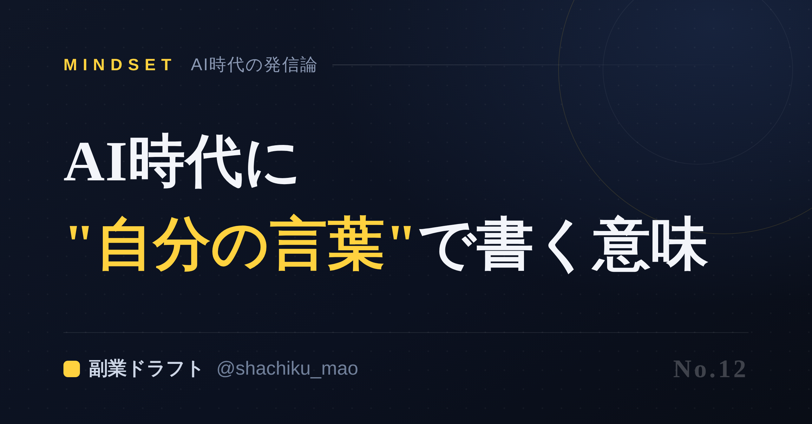
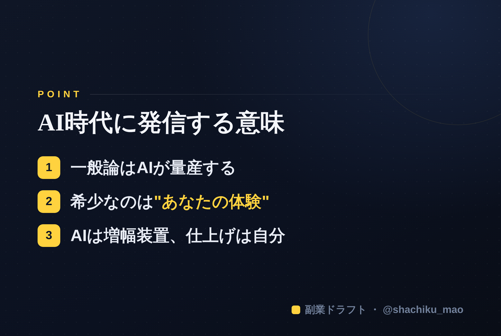

使い方
1. 「タイトルをコピー」→ note のタイトル欄に貼る
2. オレンジのラベルの画像（見出し画像）を note の見出し画像に設定
3. 「本文1をコピー」→ note本文に貼る
4. 青いラベルの位置（本文の途中）に、同じ名前の画像をアップして挿入
5. 「本文2をコピー」→ 続きを貼る
※ 見出しが普通の文字になったら、その行を選んで「大見出し」に設定してください
1. 「タイトルをコピー」→ note のタイトル欄に貼る
2. オレンジのラベルの画像（見出し画像）を note の見出し画像に設定
3. 「本文1をコピー」→ note本文に貼る
4. 青いラベルの位置（本文の途中）に、同じ名前の画像をアップして挿入
5. 「本文2をコピー」→ 続きを貼る
※ 見出しが普通の文字になったら、その行を選んで「大見出し」に設定してください
AIがある時代に、わざわざ"自分の言葉"で書く意味はあるのか
見出し画像に設定：seo-12.png

「AIが何でも書いてくれる時代に、自分で発信する意味ってあるの？」——もっともな疑問です。結論から言うと、意味は"ある"どころか、むしろAI時代だからこそ価値が上がります。その理由を整理します。
一般論はAIが量産する。だから"あなたの固有性"が希少になる
誰でもAIで、それっぽい文章を量産できるようになりました。つまり、ありきたりな情報の価値は下がっています。
逆に価値が上がったのが、あなたにしか書けないもの——実体験、失敗、独自の視点、口ぐせ。これはAIにはコピーできません。
AIは"敵"ではなく"増幅装置"
大事なのは「AIか、自分か」ではなく「AIで、自分を増幅する」発想です。
- 自分の経験や考え（＝素材）を出す
- AIが整える・言語化を手伝う
- 最後の判断と一言は自分が足す
この役割分担なら、自分らしさを保ったまま、発信のスピードだけ上がります。
"自分の言葉"を出すほど、信頼される
人は、完璧な一般論より、一人の人間の本音や過程に共感します。だからこそ、AIに丸投げせず、自分の経験を混ぜた発信が刺さる。AIが普及するほど、この差は大きくなります。
本文中に挿入：seo-12-body.png（この記事のポイント）

まとめ
- 一般論はAIが量産→希少なのは"あなたの固有性"
- AIは敵ではなく増幅装置（素材は自分、整えるのはAI、仕上げは自分）
- 自分の言葉を出すほど信頼される
AIがあるから発信しなくていい、ではなく、AIがあるから発信のハードルが下がった。今がいちばん始めやすい時期です。
※ ここからは宣伝です。 「自分の素材をAIで発信に変える」ところを手伝う自作ツール「副業ドラフト」を用意しています。ヒヤリング・強み棚卸し・Threads3本まで無料で試せます → https://note-threadssf.onrender.com
🎁 発信ノウハウは公式LINEで無料配布中 → https://lin.ee/RzyA13P
役に立ったら、スキ＆フォローで応援してもらえると嬉しいです😊